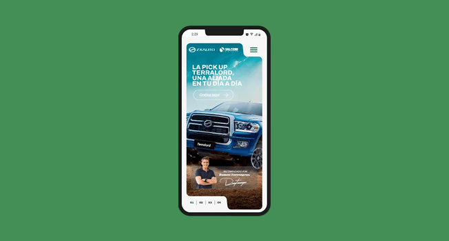

Nombre del proyecto
Rol: UI Designer · Design Systems
Contexto: Plataforma / Producto / Sistema
Conoce másDiseño interfaces claras, consistentes y escalables para productos digitales complejos, trabajando en estrecha colaboración con equipos de desarrollo.

Soy diseñador UI con foco en Design Systems, especializado en la creación y documentación de componentes, tokens y patrones reutilizables para productos digitales de gran escala. Trabajo en la intersección entre diseño y desarrollo, asegurando consistencia visual, accesibilidad y eficiencia en la implementación. Tengo experiencia diseñando sistemas para plataformas complejas, especialmente en entornos institucionales y de uso intensivo. Me interesa construir sistemas claros, mantenibles y preparados para crecer.

Diseño de interfaces limpias, claras y modernas Flujos complejos simplificados para el usuario Diseño orientado a usabilidad y eficiencia

Arquitectura de sistemas de diseño Definición de tokens (color, tipografía, spacing, estados) Componentes reutilizables y escalables Documentación clara para diseño y desarrollo

Colaboración directa con equipos frontend Alineación entre diseño y código Sistemas pensados para implementación real
Diseño pensando en sistemas, no solo pantallas.
Cada decisión visual responde a reglas claras, patrones reutilizables y necesidades reales del Busco reducir fricción, errores y retrabajo, tanto para usuarios como para equipos internos.
Rol: UI Designer · Design Systems
Contexto: Plataforma / Producto / Sistema
Conoce másRol: UI Designer · Design Systems
Contexto: Plataforma / Producto / Sistema
Conoce más